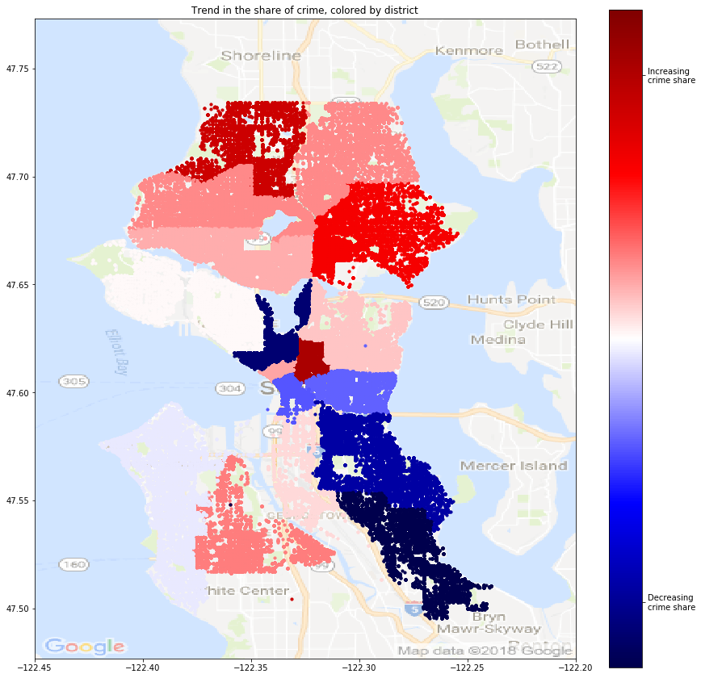

The City of Seattle is broken up into five precincts: North, West, East, Southwest, and Southeast.
Each of those precincts have a number of sectors, denoted by a letter. For example, 'M' is downtown Seattle. Each of those sectors has a number of beats denoted by a letter-number pair. M1 is then one of the beats in the M sector.
For this analysis, I decided to look at the sector level. There's enough of them that there's variation over the city, but not so many that the number would get overwhelming.
This block will be about this image:

One thing I fif was a linear regression on the crime rate in each sector of the city from the beginning of 2008 to fall 2017.
South Lake Union and South Seattle are seeing a reduction in the fraction of crimes occurring in the city which are committed there, whereas downtown and North Seattle have a trend of more and more of the crime share shifting to them.
Next one on the fitting crime rate to a daily cycle. I decided to stick with more recent data - 2016 and 2017 data - since that provides enough data to make a fit on a sector level and I wanted to keep it up to date.
What did I do?
Show the graphs:
Can see that district M, downtown, has a majorly different cycle than other places.
Caveats to point out - spike in crime count as 12am and 12midnight - probably just "sometime during the day" and "sometime at night"
Data analysis, not really prediction?